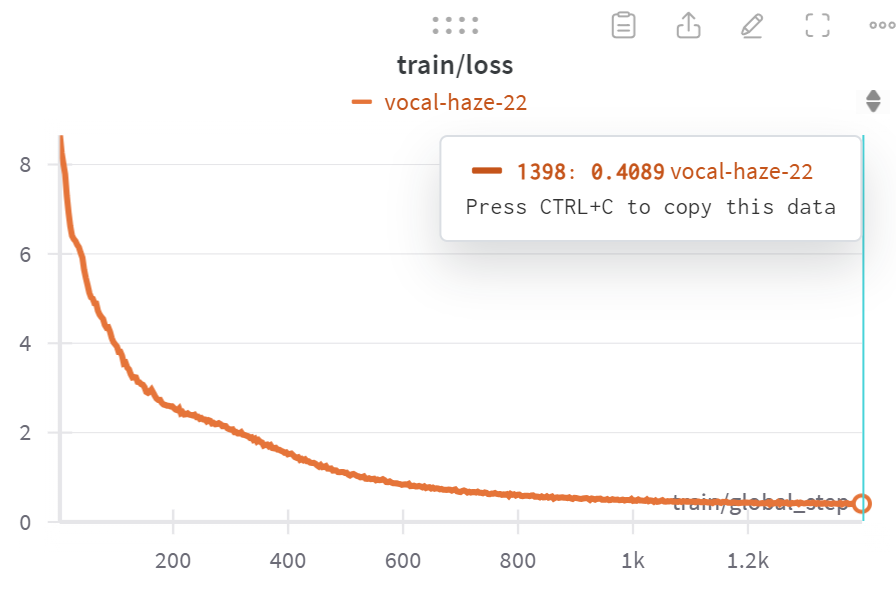
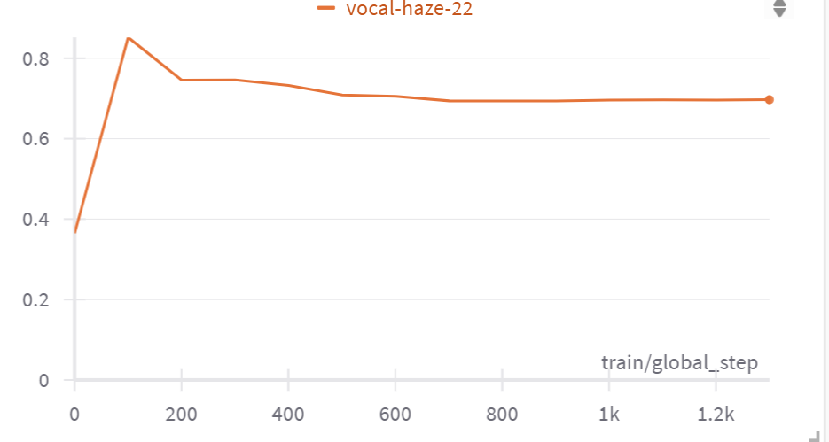
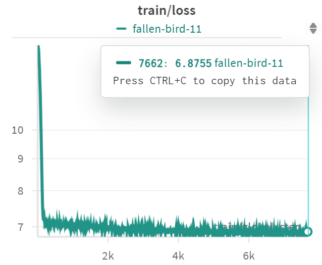
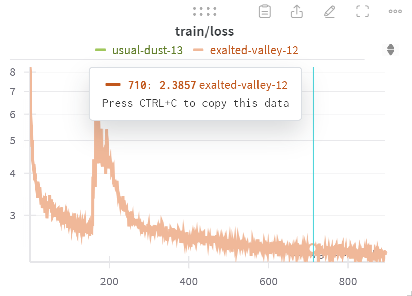

Llama 모델의 vocab expansion 버전을 한국어와 영어가 같은 semantic space에서 표현되도록 변경
| 데이터셋 | 설명 | Train | Validation |
|---|---|---|---|
| AIhubK2EBroadcast | 방송콘텐츠 번역 말뭉치 | 521,651 | 65,431 |
| AIhubK2ECorpus | 병렬 번역 말뭉치 | 1,602,418 | - |
| AIhubK2ESciTech | 전문분야 한영 말뭉치 | 1,195,228 | 149,403 |
| AIhubK2ESoSci | 기술과학 번역 말뭉치 | 1,210,529 | 151,316 |
| AIhubK2EExpert | 사회과학 번역 말뭉치 | 1,200,000 | 150,000 |
| Total | 5,729,826 | 516,150 |


Stage2) training LM head with freezing the other layers and Korean data.

